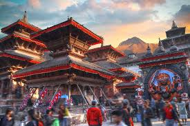
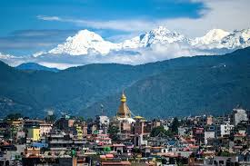
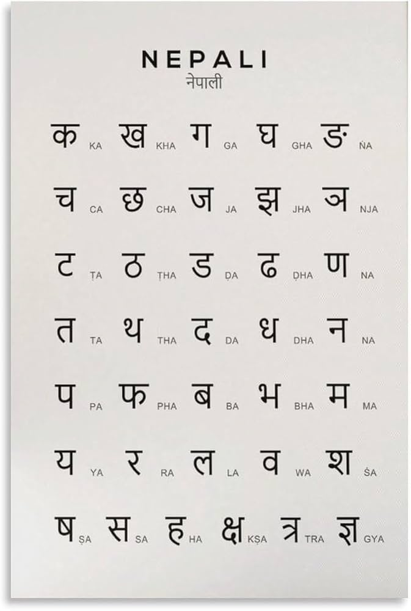
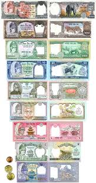

मेरो देश मेरो नेपाल

ネパールは、ヒマラヤ山脈に位置する国で、世界最高峰のエベレストを含む美しい自然と多様な文化が魅力です。カトマンズやポカラなどの都市では、歴史的な寺院や美しい風景を楽しむことができます。
約3,000万人
カトマンズ
ネパールには、エベレスト美しい山々、パシュパティナート寺院などの歴史的な名所があります。

ネパールの公用語はネパール語で、英語も広く通じます。ネパール語はデーヴァナーガリー文字で書かれています。
ネパールの通貨はネパール・ルピー(NPR)です。1ルピーは100パイサに分かれています。
ネパールの有名な料理には、ダルバート（米とレンズ豆のスープ）、モモ（蒸し餃子）などがあります。


ネパールの有名な人には、サンドゥク・ルイトはネパールの有名人の一人です。。
彼はネパールの「視力の神」と呼ばれ、何百万人もの人々の目の暗闇を取り除き、目の問題の解決策を見つけるのを助けてきました。
彼は、目の病気を治療するために、世界中の人々に無料で手術を提供しています。
彼の活動は、ネパールだけでなく、世界中の人々に感謝されています。